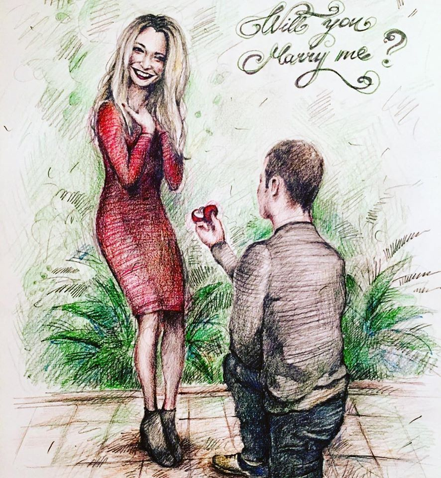
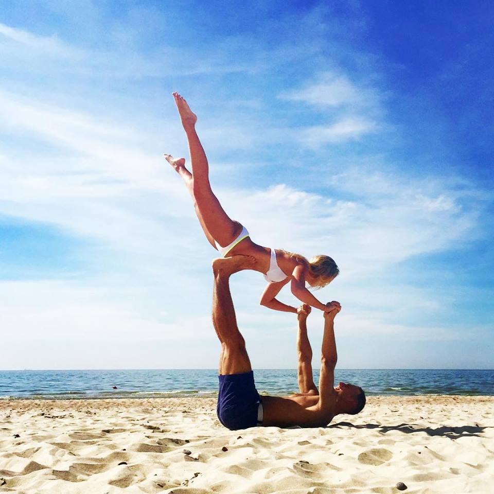
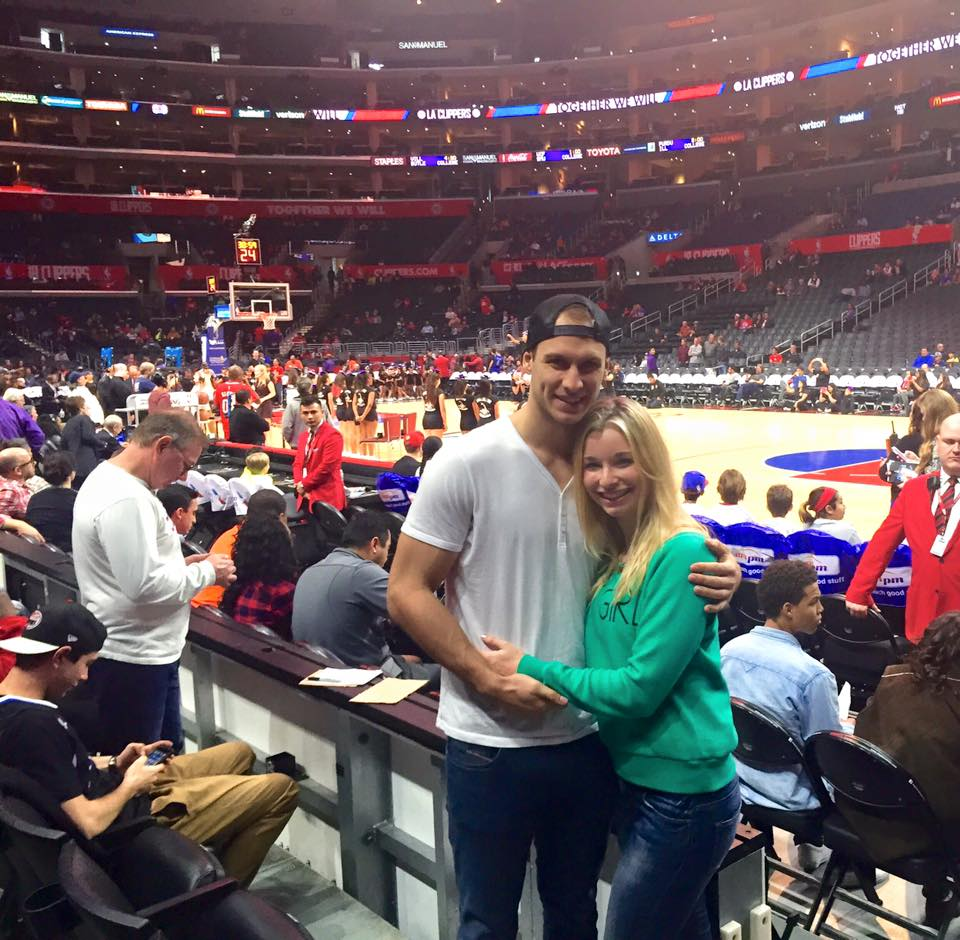

|  | As with every proposal, there are two different perspectives: the guys and the girls. We thought it'd be fun to share both. Typically there's a "ladies first" rule in life, but here we're defying the norms for two reasons: 1) it's our blog, deal with it and 2) it was Arunas' idea so he should share first :) Arunas: The idea came to me in the middle of the night to capture the moment of our proposal in a timeless and creative way: a portrait. Here's the gist of it... I would have a friend pretend to paint a caricature drawing of me and Amanda. When she turned it around to reveal the drawing, it would show me on one knee proposing. Simple, right? Well, it sounded quite simple and straightforward in my mind, but once I began the "implementation" stage, I realized there was actually a lot needed to make it happen. For starters, Amanda knew all of my friends so I didn't know who to ask to draw it. Second, I had to subtly choose Amanda's outfit for her so it would match the drawing. I actually wasn't nervous at all and I was feeling pretty cool and collected... all until the moment I reached into my pocket to take out the ring. Without warning I started shaking uncontrollably. I dropped onto one knee and said something charming that I was too nervous to remember. It must have been good though because she said yes. Amanda: I get the question a lot: did you expect it? Well, no. In fact, the only giveaway was when his hands started shaking. Since Arunas has no concept of stage fright, something in my brain told me there was something up. But by the time that registered, he was on one knee saying something that I was too shocked to remember. It must have been good though because I nodded my head repeatedly with an enthusiastic yes and I couldn't fall asleep for about a week after. |
|---|
|  | When the sun is out in Lithuania, it is something to take full advantage of, because it isn't too common of an occurrence. When one of the final days of summer rolled around and the sun was radiating throughout the sky, we couldn't resist the urge to drive to the beach. Luckily, since our University is a mere 7 minutes from the sea, this was easy to accomplish. But once we arrived, we had too much energy to sit still. Unfortunately, we hadn't thought to bring a football or anything. In fact, besides a snap-back and water bottle, all we had to work with was our creativity. So we decided to go for something that required zero resources and ample creativity: acro-yoga. Instagram users somehow make this sport look easy and effortless. It's not. That picture took a ridiculous amount of takes to capture, because a majority of them featured Amanda eating sand while in the midst of a faceplant. It was completely worth it though, not because of the picture, but because of the experience. Sharing the passion of fitness with the person you love, and having the ability to learn new skills alongside them is a beautiful gift. |
|---|
|  | Arunas has a handful of loves in life: his family, the smell of gasoline (I'm still confused about this one), and basketball. I kid you not, this guy knows NBA inside and out. Every team, every player, every stat. It's actually quite incredible. And his dedication knows no bounds. He would tell me about times when he would wake up in the middle of the night in Lithuania (time changes are brutal) to watch important NBA games. For a long time I knew that I needed to bring him to a game when we visited my home in California but unfortunately, we always visited when basketball was no longer in season. Until this January. Finally, we visited at the perfect time so I snagged tickets without him knowing. The cool part about the Staples Center is that it's relatively close to LAX, so what better way to get Arunas to the Staples Center without suspecting my surprise than to plan it on the day we're leaving California to head back to Lithuania? I merely mentioned that our flight was in the morning instead of the actual afternoon time, and off to LA we drove. My parents accompanied this adventure and for me it was a wonderful farewell to LA. Meanwhile, for Arunas, it was a wonderful fulfillment of his childhood dreams. Mission accomplished! |
|---|